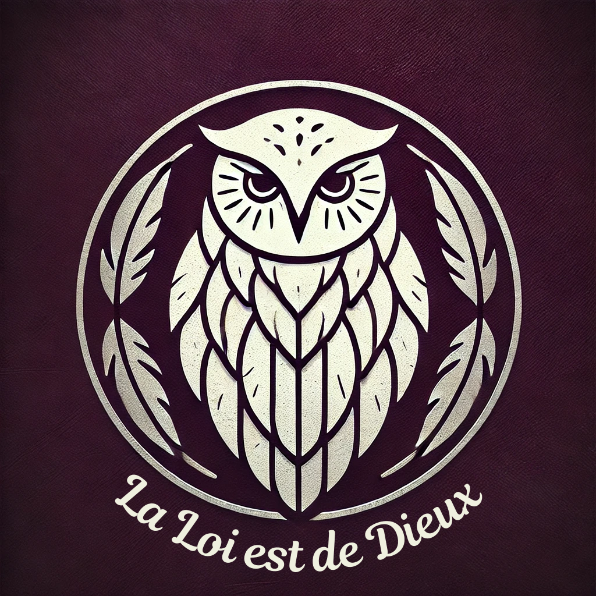

Duché de Venteux
Duc : Richard Cesnard
Duchesse : Eristine Cesnard
Héritier : Léane Cesnard
Le duché de Venteux regroupe toutes les île de la région de Venteux. Il n'a donc pas de frontiéres directes avec d'autre Duchés ou Royaumes.
Seigneur Lige
Le duché de Venteux est directement mis au service de l'Empereur Dougrin V.
Vasseaux
Trois comtés sont présent dans le duché de Fort Typhon.
Dans la partie Nord de l'île du Chevalier, la plus grande île de la région de Venteux, on y trouve le comté de HauteBrises. C'est là la partie principale du duchés. On y trouve la place forte Fort Typhon. Les hautes montagnes et falaise qui jonche le reste du comté le rende difficile à habité. Ainsi la quasi totaliter des habitant du comté sont regrouper à Fort Typhon. En plus du duché, Richard Cesnard, le duc de Venteux, s'occupe également du comté de HauteBrises.
Sur la derniére île de la région, l'île de l'écuyer, on y trouve le comté de Briserois, Briserois est la porte d'entrés du duché et un lieux trés important du commerce maritime. La maison Ambline en est le dirigeant, celles si détient depuis déjà plus d'un siécle de trés grands lien avec le Duc de Fort Typhon.
Géographie
Les îles de la région de Venteux possédent un relief montagneux
La partie Nord Ouest de l'île du Chevalier est une zone sensible, sujettes au vent fort de l'Océan Hollandien, elle c'est vu forgé de hautes falaises ne facilitant pas l'accées à l'île.
La partie Sud est quant à elle moins escarper et ainsi plus apte à acceuillir quelques plaines pour des plantation et de petits villages. Il en est de même pour l'île du Bouclier et l'île du Chien.
l'île de l'ecuyer est un peu différente des trois premiére, étant bien protéger des violents orages et des vents impréssionant venant de l'océan Hollandien. Quelques monticuls sont tous de même présents, mais l'île est plutôt partager entres ses grandes plages et ses forêts.